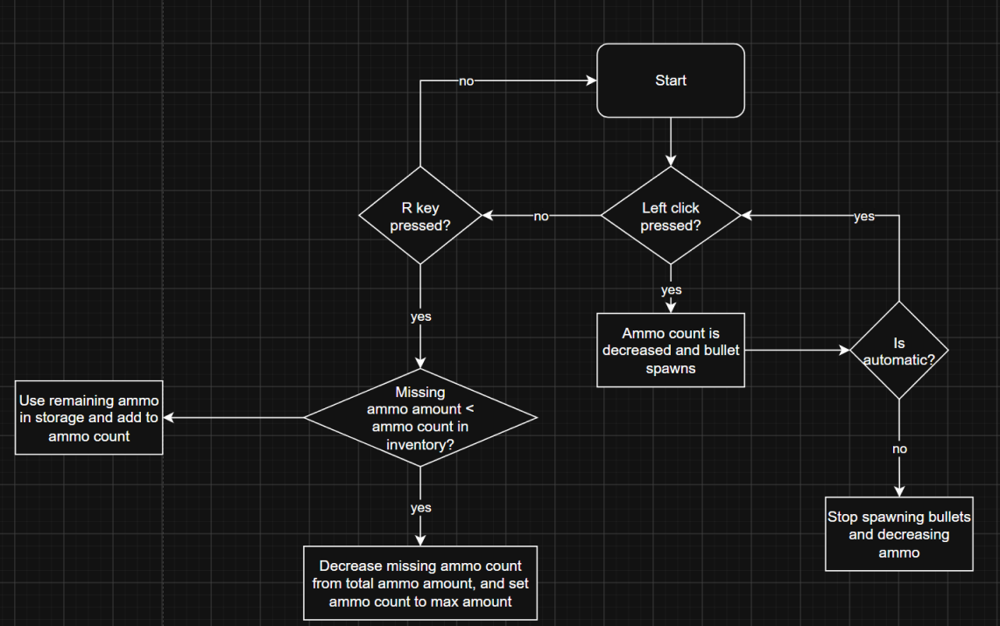
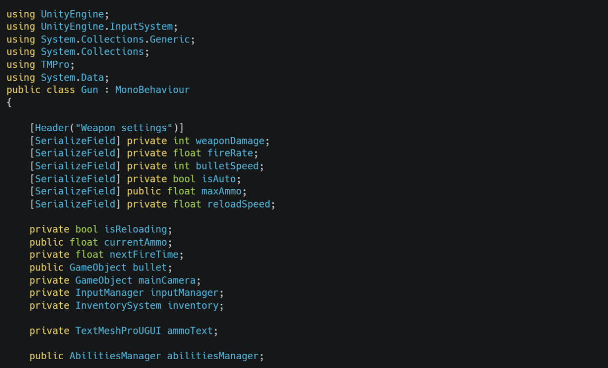
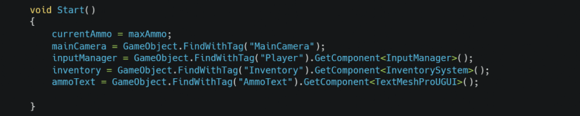
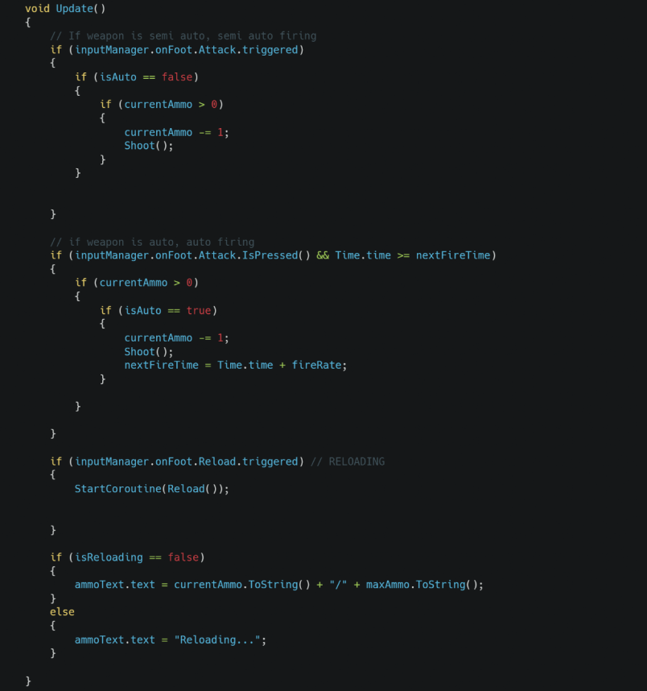
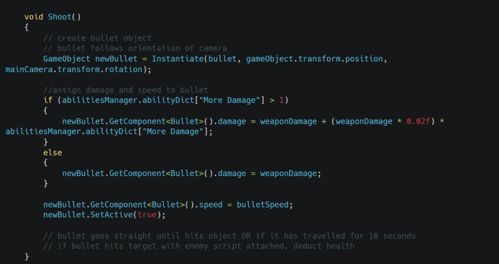
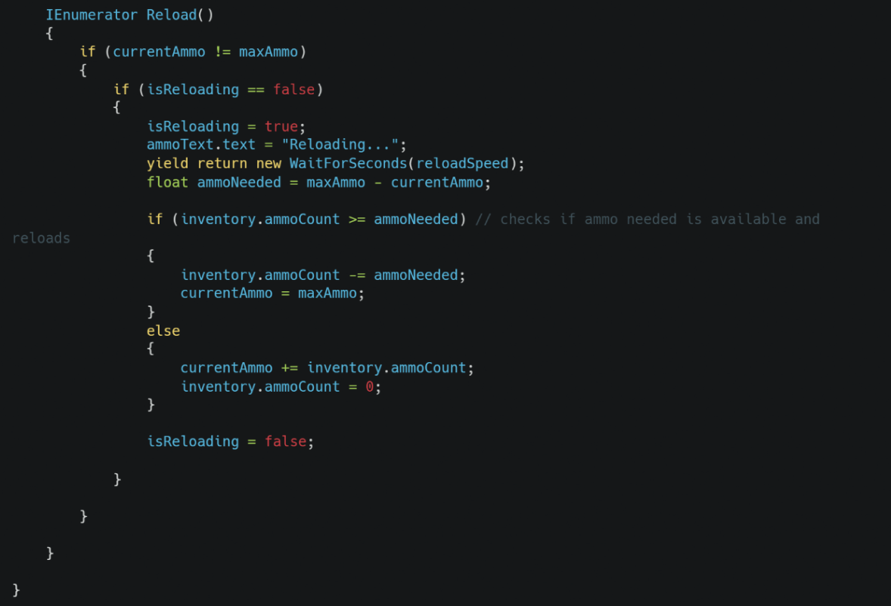

Functional requirement
“There should be a gun template that allows me to easily add new weapons with different stats. This includes things like semi auto or auto, bullet speed, reload speed and damage. It should also be able to reload with ammo in the inventory”
Testable criteria:
Stats follow defined stats in the inspector
Ammo is correctly taken from the inventory


Weapon variables for customization of the weapon in the inspector

Defines ammo count and other systems in use.

This check is using the Unity input system to see if the set keybinds are pressed for attacking and reloading. It checks for if the weapon is automatic or semi auto, and changes the ammo text to display if you are reloading.

Method is called to create a bullet object. Checks any upgrade to apply to the bullet damage, and sets the bullet damage in the bullet class. Also assigns the bullet speed.

Reloading coroutine to apply correct amount of ammo to the magazine. Checks to see if there is enough ammo in the inventory to fully reload, but if not, will add the remaining ammo to the magazine and set the ammo count in the inventory to 0.